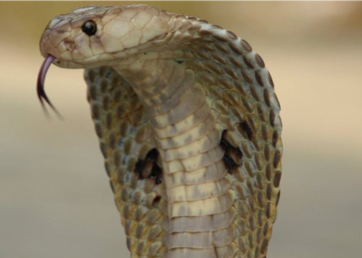
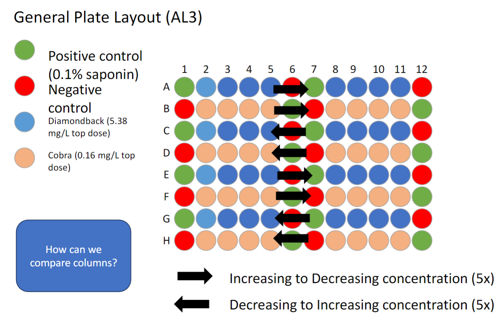

Antidote drug discovery for snake bite
Abstract :
Snake venom toxicity is a major global health issue, contributing to over 100,000 deaths and 400,000 cases of permanent disfigurement annually. Venoms contain a mixture of cytotoxins, neurotoxins, and hemotoxins that can cause tissue necrosis, paralysis, and organ failure. The current treatment involves antibody-based anti-venom therapy, which presents several challenges, including variable efficacy depending on the snake species, potential for severe allergic reactions, and the need for cold storage, making it difficult to administer in remote regions. This project aims to identify a novel, inexpensive, and shelf-stable drug capable of mitigating venom toxicity in humans. Using NIH 3T3 fibroblasts as a model system, we investigate the effects of selected venoms on gene expression and cellular structures. Our approach integrates genomics tools and cell-based assays to uncover potential drug candidates that could be developed into effective, globally accessible treatments for snakebite victims.
Background :
Snakebite envenoming is recognized by the World Health Organization (WHO) as a significant yet neglected tropical disease, especially affecting impoverished regions with limited access to medical care. Venomous snakebites are responsible for a high mortality rate, with cytotoxic, neurotoxic, and hemotoxic effects causing severe complications such as paralysis, tissue necrosis, and multi-organ failure. Current treatment relies on antibody-based anti-venom, a solution that has been used for over a century. However, anti-venom therapy faces several limitations, including species-specific efficacy, the risk of adverse immune responses, high production costs, and a reliance on cold storage. Furthermore, in many rural and remote areas, cold-chain logistics are difficult to maintain, reducing the availability of life-saving treatments. These gaps underscore the urgent need for novel, accessible therapeutics that are both cost-effective and shelf-stable.
Our research addresses this need by exploring alternative pharmacological interventions for mitigating venom toxicity. By leveraging insights from cell biology, genomics, and drug discovery, our project investigates the cellular and molecular effects of venom on NIH 3T3 fibroblasts. We aim to identify compounds that reduce venom-induced cytotoxicity by screening for agents that modulate key gene expression pathways. This project builds on emerging literature that highlights the potential of small molecules as venom inhibitors and drug-like compounds capable of stabilizing cellular functions disrupted by venom. In collaboration with the Koes Group's expertise in computational biology, we use molecular simulations to better understand venom-protein interactions and guide the selection of compounds for experimental testing. This interdisciplinary approach contributes to the broader field of venom research by pushing toward the development of shelf-stable, widely accessible drugs that can be used in resource-limited settings.
Materials & Methods :
For this project, we focused on two venomous snake species: the Indian Cobra (Naja naja) and the Western Diamondback Rattlesnake (Crotalus atrox). The Indian Cobra's venom is highly lethal, with an LD50 value of 0.35 mg/kg when administered intravenously in mice, indicating its potent neurotoxic and cytotoxic effects. In contrast, the venom of the Western Diamondback has an LD50 of 2.72 mg/kg, though it is responsible for a significant number of snakebite deaths in the regions where it is prevalent. These differences in venom toxicity provided an ideal comparison for studying venom effects on mammalian cells.
For the experiment, we cultivated NIH 3T3 mouse fibroblasts in a 96-well plate format. We prepared a treatment plate with a gradient of venom concentrations for each snake species, with the maximum concentration set approximately 10% higher than the LD50 values of the respective venoms. The venom concentrations were arranged in alternating directions across the plate to avoid bias. The positive control used was 0.1% saponin, known for its cell membrane-disrupting properties, while the negative control was water. We employed the Cybio Felix, a liquid handling system, to accurately prepare and transfer the treatment solutions onto the 96-well plate containing cells. The use of the Cybio Felix ensured precision in handling the delicate setup and is a skill I have developed proficiency in through this project. After applying the venom treatments, the cells were incubated for 30 minutes, followed by staining with Hoechst dye to mark all cells and propidium iodide to differentiate between live and dead cells. The same experiment was repeated with a 48-hour incubation to assess long-term effects
Data from the experiment will be analyzed by imaging and cell counting to generate a dose-response curve. Following this, we plan to assess the gene expression levels in the treated cells to determine which genes are overexpressed or underexpressed, laying the groundwork for designing an antidote.
For more information on Automated biology and previous Cybio felix projects visit plotia.github.io/autobio
This is an ongoing project, hence results are not provided